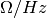
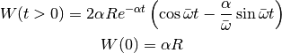

impedances package¶
Submodules¶
impedances.longitudinal_impedance module¶
Module to compute longitudinal intensity effects
| Authors: | Danilo Quartullo, Alexandre Lasheen, Hannes Bartosik |
|---|
- class impedances.longitudinal_impedance.InducedVoltageFreq(Slices, impedance_source_list, frequency_resolution, freq_res_option='round')¶
Bases: object
Induced voltage derived from the sum of several impedances. frequency_resolution is equal to 1/(dist_centers * n) where dist_centers is the distance between the centers of two consecutive slides and (n/2 + 1) is the number of sampling points for the frequency array; see the frequency_array method. Sum_slopes_from_induc_imp is the sum of all the inductances derived from all the inductive impedance, included space charge; see in addition the ind_vol_derivative method. The frequency resolution is defined by your input, but this value will be adapted in order to optimize the FFT. The number of points used in the FFT should be a power of 2, to be faster, but this number of points also changes the frequency resolution. The frequency is then set to be the closest power of two to have the closest resolution wrt your input. The way the code chooses the power is set by the freq_res_option. If this is set to ‘round’ (default), the closest (higher or lower) resolution that also fulfills optimisation will be used. If set to ‘best’, the frequency resolution will be at least your input, so you always have a better resolution.
- frequency_array = None¶
Frequency array of the impedance in [Hz]
- frequency_resolution = None¶
Frequency resolution in [Hz], the beam profile sampling for the spectrum will be adapted accordingly.
- impedance_source_list = None¶
Impedance sources inputed as a list (eg: list of BBResonators objects)
- induced_voltage = None¶
Induced voltage from the sum of the wake sources in [V]
- induced_voltage_generation(Beam)¶
Method to calculate the induced voltage from the inverse FFT of the impedance times the spectrum (fourier convolution).
- n_fft_sampling = None¶
Number of points used to FFT the beam profile (by padding zeros), this is calculated in order to have at least the input frequency_resolution.
- slices = None¶
Copy of the Slices object in order to access the profile info.
- sum_impedances(frequency_array)¶
Summing all the wake contributions in one total impedance.
- total_impedance = None¶
Total impedance array of all sources in [
 ]
]
- track(Beam)¶
Tracking method.
- class impedances.longitudinal_impedance.InducedVoltageTime(Slices, wake_source_list)¶
Bases: object
Induced voltage derived from the sum of several wake fields (time domain).
- induced_voltage = None¶
Induced voltage from the sum of the wake sources in [V]
- induced_voltage_generation(Beam)¶
Method to calculate the induced voltage from wakes with convolution or with the matrix method (this method scales with the number of sources you have and is slower than the convolve method, this might be optimized with a dedicated method that would use pure matrix calculations to reduce to the minimum the number of loops).
- slices = None¶
Copy of the Slices object in order to access the profile info.
- sum_wakes(time_array)¶
Summing all the wake contributions in one total wake.
- time_array = None¶
Time array of the wake in [s]
- total_wake = None¶
Total wake array of all sources in [
 ]
]
- track(Beam)¶
Tracking method.
- wake_source_list = None¶
Wake sources inputed as a list (eg: list of BBResonators objects)
- class impedances.longitudinal_impedance.InductiveImpedance(Slices, Z_over_n, revolution_frequency, calc_domain='time', deriv_mode='gradient')¶
Bases: object
Constant imaginary Z/n impedance. This needs to be extended to the cases where there is acceleration as the revolution frequency f0 used in the calculation of n=f/f0 is changing (general_params as input ?).
- Z_over_n = None¶
Constant imaginary Z/n in []
- calc_domain = None¶
Calculation domain (time for derivative, freq for inverse fft.
- deriv_mode = None¶
Derivation method to compute induced voltage
- freq_array = None¶
Frequency array of the impedance in [Hz]
- imped_calc(freq_array)¶
Impedance calculation method as a function of frequency.
- impedance = None¶
Impedance array in [
]
- induced_voltage = None¶
Induced voltage from the sum of the wake sources in [V]
- induced_voltage_generation(Beam)¶
*Method to calculate the induced voltage through the derivative of the profile; the impedance must be of inductive type. *
- revolution_frequency = None¶
Revolution frequency in [Hz]
- slices = None¶
Copy of the Slices object in order to access the profile info.
- track(Beam)¶
Track method
- class impedances.longitudinal_impedance.InputTable(input_1, input_2, input_3=None)¶
Bases: object
Intensity effects from impedance and wake tables. If this constructor takes just two arguments, then a wake table is passed; if it takes three arguments, then an impedance table is passed. Be careful that if you input a wake, the input wake for W(t=0) should be already divided by two (beam loading theorem) ; and that if you input impedance, only the positive frequencies of the impedance is needed (the impedance will be assumed to be Hermitian (Real part symmetric and Imaginary part antisymmetric).Note that we add the point (f, Z(f)) = (0, 0) to the frequency and impedance arrays derived from the table.
- Im_Z_array = None¶
Imaginary part of impedance in [
]
- Re_Z_array = None¶
Real part of impedance in [
]
- freq_array = None¶
Frequency array of the impedance in [Hz]
- imped_calc(new_frequency_array)¶
The impedance is interpolated in order to scale with the new frequency array.
- impedance = None¶
Impedance array in [
]
- time_array = None¶
Time array of the wake in [s]
- wake_array = None¶
Wake array in [
]
- wake_calc(new_time_array)¶
The wake is interpolated in order to scale with the new time array.
- class impedances.longitudinal_impedance.Resonators(R_S, frequency_R, Q)¶
Bases: object
Impedance contribution from resonators, analytic formulas for both wake and impedance. The resonant modes (and the corresponding R and Q) can be inputed as a list in case of several modes.
The model is the following:



- Q = None¶
Quality factor
- R_S = None¶
Shunt impepdance in [
]
- freq_array = None¶
Frequency array of the impedance in [Hz]
- frequency_R = None¶
Resonant frequency in [Hz]
- imped_calc(freq_array)¶
Impedance calculation method as a function of frequency.
- impedance = None¶
Impedance array in [
]
- n_resonators = None¶
Number of resonant modes
- omega_R = None¶
Resonant angular frequency in [rad/s]
- time_array = None¶
Time array of the wake in [s]
- wake = None¶
Wake array in [
]
- wake_calc(time_array)¶
Wake calculation method as a function of time.
- class impedances.longitudinal_impedance.TotalInducedVoltage(Slices, induced_voltage_list)¶
Bases: object
Object gathering all the induced voltage contributions. The input is a list of objects able to compute induced voltages (InducedVoltageTime, InducedVoltageFreq). All the induced voltages will be summed in order to reduce the computing time. All the induced voltages should have the same slicing resolution.
- induced_voltage = None¶
Induced voltage from the sum of the wake sources in [V]
- induced_voltage_list = None¶
Induced voltage list.
- induced_voltage_sum(Beam)¶
Method to sum all the induced voltages in one single array.
- slices = None¶
Copy of the Slices object in order to access the profile info.
- time_array = None¶
Time array of the wake in [s]
- track(Beam)¶
Track method to apply the induced voltage kick on the beam.
- class impedances.longitudinal_impedance.TravelingWaveCavity(R_S, frequency_R, a_factor)¶
Bases: object
Impedance contribution from traveling wave cavities, analytic formulas for both wake and impedance. The resonance modes (and the corresponding R and a) can be inputed as a list in case of several modes.
The model is the following:
![Z_+(f) = R \left[\left(\frac{\sin{\frac{a\left(f-f_r\right)}{2}}}{\frac{a\left(f-f_r\right)}{2}}\right)^2 - 2i \frac{a\left(f-f_r\right) - \sin{a\left(f-f_r\right)}}{\left(a\left(f-f_r\right)\right)^2}\right]
Z_-(f) = R \left[\left(\frac{\sin{\frac{a\left(f+f_r\right)}{2}}}{\frac{a\left(f+f_r\right)}{2}}\right)^2 - 2i \frac{a\left(f+f_r\right) - \sin{a\left(f+f_r\right)}}{\left(a\left(f+f_r\right)\right)^2}\right]
Z = Z_+ + Z_-](_images/math/5444d30827c560a24f3edcf71b32ba0aa18acadb.png)


- R_S = None¶
Shunt impepdance in [
]
- a_factor = None¶
Damping time a in [s]
- freq_array = None¶
Frequency array of the impedance in [Hz]
- frequency_R = None¶
Resonant frequency in [Hz]
- imped_calc(freq_array)¶
Impedance calculation method as a function of frequency.
- impedance = None¶
Impedance array in [
]
- n_twc = None¶
Number of resonant modes
- time_array = None¶
Time array of the wake in [s]
- wake = None¶
Wake array in [
]
- wake_calc(time_array)¶
Wake calculation method as a function of time.